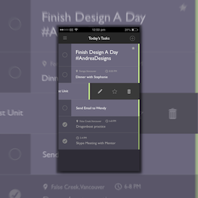

Day 48 - Today's Checklist
I realized I've been getting a lot of my inspiration from my apps. I was going through my phone again, and seeing what I can do to improve it. And today, I decided to change my To-Do list on my phone.
First, I tried to look for some inspiration from To-Do lists online, because the one in my phone was a little too plain in style. So I decided to add a bit of colour to it, changing from the white theme to the dark theme once again. Next, I started thinking about the different items I need in order for the app to tackle all problems. This would include adding tasks, deleting tasks, and prioritizing tasks.
As for adding tasks, all I needed was to include a button. I had a hard time deciding whether to put the add button on the top right or the bottom right. In the end, I placed it on the top right to balance the top panel, which includes the hamburger icon and the header. As for deleting tasks, I decided to create an interactive slide-out for each of the tasks. This interactive slide out includes: Edit, Favourite and Delete. Users will know to slide-out once they see the green tab located on the right of each task. Finally, for prioritizing task, this is can be shown in the Favourite icon located in the slide-out.
Also, I added location and time, just for personal reference. As for me, I'd like to have the option to add location and time if they're important notes to the task.